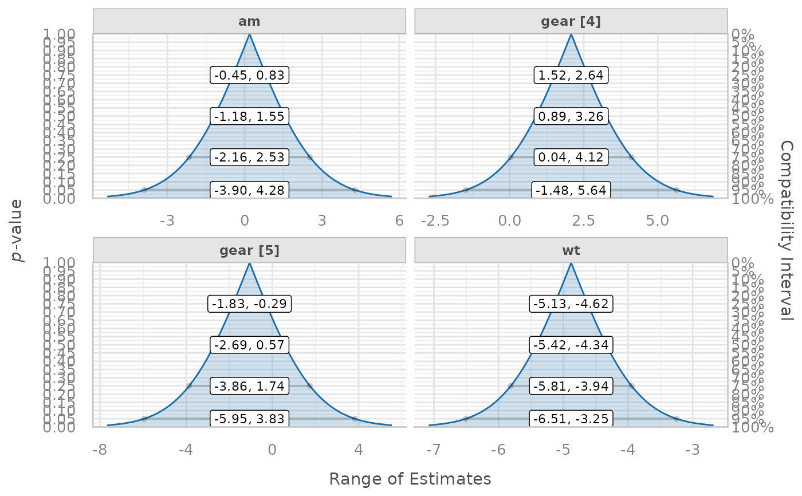

Compute p-values and compatibility (confidence) intervals for
statistical models, at different levels. This function is also called
consonance function. It allows to see which estimates are compatible with
the model at various compatibility levels. Use plot() to generate plots
of the p resp. consonance function and compatibility intervals at
different levels.
Usage
p_function(
model,
ci_levels = c(0.25, 0.5, 0.75, emph = 0.95),
exponentiate = FALSE,
effects = "fixed",
component = "all",
keep = NULL,
drop = NULL,
verbose = TRUE,
...
)
consonance_function(
model,
ci_levels = c(0.25, 0.5, 0.75, emph = 0.95),
exponentiate = FALSE,
effects = "fixed",
component = "all",
keep = NULL,
drop = NULL,
verbose = TRUE,
...
)
confidence_curve(
model,
ci_levels = c(0.25, 0.5, 0.75, emph = 0.95),
exponentiate = FALSE,
effects = "fixed",
component = "all",
keep = NULL,
drop = NULL,
verbose = TRUE,
...
)Arguments
- model
Statistical Model.
- ci_levels
Vector of scalars, indicating the different levels at which compatibility intervals should be printed or plotted. In plots, these levels are highlighted by vertical lines. It is possible to increase thickness for one or more of these lines by providing a names vector, where the to be highlighted values should be named
"emph", e.gci_levels = c(0.25, 0.5, emph = 0.95).- exponentiate
Logical, indicating whether or not to exponentiate the coefficients (and related confidence intervals). This is typical for logistic regression, or more generally speaking, for models with log or logit links. It is also recommended to use
exponentiate = TRUEfor models with log-transformed response values. Note: Delta-method standard errors are also computed (by multiplying the standard errors by the transformed coefficients). This is to mimic behaviour of other software packages, such as Stata, but these standard errors poorly estimate uncertainty for the transformed coefficient. The transformed confidence interval more clearly captures this uncertainty. Forcompare_parameters(),exponentiate = "nongaussian"will only exponentiate coefficients from non-Gaussian families.- effects
Should parameters for fixed effects (
"fixed"), random effects ("random"), or both ("all") be returned? Only applies to mixed models. May be abbreviated. If the calculation of random effects parameters takes too long, you may useeffects = "fixed".- component
Should all parameters, parameters for the conditional model, for the zero-inflation part of the model, or the dispersion model be returned? Applies to models with zero-inflation and/or dispersion component.
componentmay be one of"conditional","zi","zero-inflated","dispersion"or"all"(default). May be abbreviated.- keep
Character containing a regular expression pattern that describes the parameters that should be included (for
keep) or excluded (fordrop) in the returned data frame.keepmay also be a named list of regular expressions. All non-matching parameters will be removed from the output. Ifkeepis a character vector, every parameter name in the "Parameter" column that matches the regular expression inkeepwill be selected from the returned data frame (and vice versa, all parameter names matchingdropwill be excluded). Furthermore, ifkeephas more than one element, these will be merged with anORoperator into a regular expression pattern like this:"(one|two|three)". Ifkeepis a named list of regular expression patterns, the names of the list-element should equal the column name where selection should be applied. This is useful for model objects wheremodel_parameters()returns multiple columns with parameter components, like inmodel_parameters.lavaan(). Note that the regular expression pattern should match the parameter names as they are stored in the returned data frame, which can be different from how they are printed. Inspect the$Parametercolumn of the parameters table to get the exact parameter names.- drop
See
keep.- verbose
Toggle warnings and messages.
- ...
Arguments passed to or from other methods. Non-documented arguments are
digits,p_digits,ci_digitsandfooter_digitsto set the number of digits for the output.groupcan also be passed to theprint()method. See details inprint.parameters_model()and 'Examples' inmodel_parameters.default().
Details
Compatibility intervals and continuous p-values for different estimate values
p_function() only returns the compatibility interval estimates, not the
related p-values. The reason for this is because the p-value for a
given estimate value is just 1 - CI_level. The values indicating the lower
and upper limits of the intervals are the related estimates associated with
the p-value. E.g., if a parameter x has a 75% compatibility interval
of (0.81, 1.05), then the p-value for the estimate value of 0.81
would be 1 - 0.75, which is 0.25. This relationship is more intuitive and
better to understand when looking at the plots (using plot()).
Conditional versus unconditional interpretation of p-values and intervals
p_function(), and in particular its plot() method, aims at re-interpreting
p-values and confidence intervals (better named: compatibility intervals)
in unconditional terms. Instead of referring to the long-term property and
repeated trials when interpreting interval estimates (so-called "aleatory
probability", Schweder 2018), and assuming that all underlying assumptions
are correct and met, p_function() interprets p-values in a Fisherian way
as "continuous measure of evidence against the very test hypothesis and
entire model (all assumptions) used to compute it"
(P-Values Are Tough and S-Values Can Help).
This interpretation as a continuous measure of evidence against the test hypothesis and the entire model used to compute it can be seen in the figure below (taken from P-Values Are Tough and S-Values Can Help). The "conditional" interpretation of p-values and interval estimates (A) implicitly assumes certain assumptions to be true, thus the interpretation is "conditioned" on these assumptions (i.e. assumptions are taken as given). The unconditional interpretation (B), however, questions all these assumptions.

"Emphasizing unconditional interpretations helps avoid overconfident and misleading inferences in light of uncertainties about the assumptions used to arrive at the statistical results." (Greenland et al. 2022).
Note: The term "conditional" as used by Rafi and Greenland probably has a slightly different meaning than normally. "Conditional" in this notion means that all model assumptions are taken as given - it should not be confused with terms like "conditional probability".
In other words, the term compatibility interval emphasizes "the dependence of the p-value on the assumptions as well as on the data, recognizing that p<0.05 can arise from assumption violations even if the effect under study is null" (Gelman/Greenland 2019).
Probabilistic interpretation of compatibility intervals
Schweder (2018) resp. Schweder and Hjort (2016) (and others) argue that
confidence curves (as produced by p_function()) have a valid probabilistic
interpretation. They distinguish between aleatory probability, which
describes the aleatory stochastic element of a distribution ex ante, i.e.
before the data are obtained. This is the classical interpretation of
confidence intervals following the Neyman-Pearson school of statistics.
However, there is also an ex post probability, called epistemic probability,
for confidence curves. The shift in terminology from confidence intervals
to compatibility intervals may help emphasizing this interpretation.
In this sense, the probabilistic interpretation of p-values and compatibility intervals is "conditional" - on the data and model assumptions (which is in line with the "unconditional" interpretation in the sense of Rafi and Greenland).
"The realized confidence distribution is clearly an epistemic probability
distribution" (Schweder 2018). In Bayesian words, compatibility intervals
(or confidence distributons, or consonance curves) are "posteriors without
priors" (Schweder, Hjort, 2003). In this regard, interpretation of p-values
might be guided using bayestestR::p_to_pd().
Compatibility intervals - is their interpretation conditional or not?
The fact that the term "conditional" is used in different meanings, is confusing and unfortunate. Thus, we would summarize the probabilistic interpretation of compatibility intervals as follows: The intervals are built from the data and our modeling assumptions. The accuracy of the intervals depends on our model assumptions. If a value is outside the interval, that might be because (1) that parameter value isn't supported by the data, or (2) the modeling assumptions are a poor fit for the situation. When we make bad assumptions, the compatibility interval might be too wide or (more commonly and seriously) too narrow, making us think we know more about the parameter than is warranted.
Note
Curently, p_function() computes intervals based on Wald t- or z-statistic.
For certain models (like mixed models), profiled intervals may be more
accurate, however, this is currently not supported.
References
Fraser DAS. The P-value function and statistical inference. The American Statistician. 2019;73(sup1):135-147. doi:10.1080/00031305.2018.1556735
Gelman A, Greenland S. Are confidence intervals better termed "uncertainty intervals"? BMJ (2019)l5381. doi:10.1136/bmj.l5381
Greenland S, Rafi Z, Matthews R, Higgs M. To Aid Scientific Inference, Emphasize Unconditional Compatibility Descriptions of Statistics. (2022) https://arxiv.org/abs/1909.08583v7 (Accessed November 10, 2022)
Rafi Z, Greenland S. Semantic and cognitive tools to aid statistical science: Replace confidence and significance by compatibility and surprise. BMC Medical Research Methodology. 2020;20(1):244. doi:10.1186/s12874-020-01105-9
Schweder T. Confidence is epistemic probability for empirical science. Journal of Statistical Planning and Inference (2018) 195:116–125. doi:10.1016/j.jspi.2017.09.016
Schweder T, Hjort NL. Confidence and Likelihood. Scandinavian Journal of Statistics. 2002;29(2):309-332. doi:10.1111/1467-9469.00285
Schweder T, Hjort NL. Frequentist analogues of priors and posteriors. In Stigum, B. (ed.), Econometrics and the Philosophy of Economics: Theory Data Confrontation in Economics, pp. 285-217. Princeton University Press, Princeton, NJ, 2003
Schweder T, Hjort NL. Confidence, Likelihood, Probability: Statistical inference with confidence distributions. Cambridge University Press, 2016.
Examples
model <- lm(Sepal.Length ~ Species, data = iris)
p_function(model)
#> Consonance Function
#>
#> Parameter | 25% CI | 50% CI | 75% CI | 95% CI
#> --------------------------------------------------------------------------------
#> (Intercept) | [4.98, 5.03] | [4.96, 5.06] | [4.92, 5.09] | [4.86, 5.15]
#> Species [versicolor] | [0.90, 0.96] | [0.86, 1.00] | [0.81, 1.05] | [0.73, 1.13]
#> Species [virginica] | [1.55, 1.61] | [1.51, 1.65] | [1.46, 1.70] | [1.38, 1.79]
if (requireNamespace("see") && packageVersion("see") > "0.7.3") {
model <- lm(mpg ~ wt + as.factor(gear) + am, data = mtcars)
result <- p_function(model)
# single panels
plot(result, n_columns = 2)
# integrated plot, the default
plot(result)
}
#> Warning: Using linewidth for a discrete variable is not advised.
